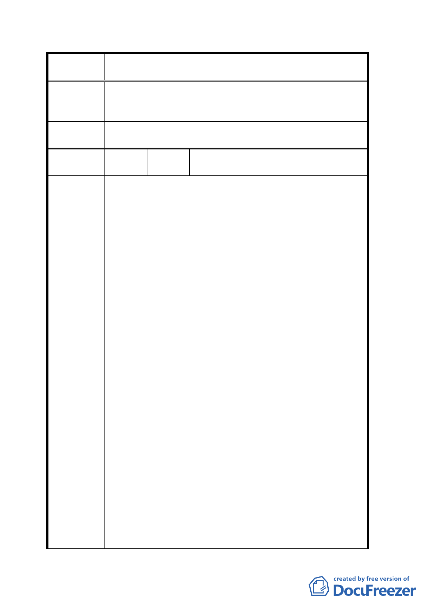

案
名
變更「修訂台北市主要計畫商業區（通盤檢討）計
畫案」內有關商業區變更回饋相關規定案
專案小組
審查結論
為促進商業發展並兼顧原有住宅區品質，所提之行業除應
依臺北市社區參與實施辦法規定辦理外，專案小組已將公
寓大廈管理組織機制納入變更條件中。
委員會議
決議
依專案小組審查結論辦理。
編
號
5
陳情人
羅秀一、何逸松、李日南、林坤松、高
阿良等五○○人
建議理由：
八十四年九月二十七日公告之「修訂臺北市主要計畫商業
區（通盤檢討）計畫案」將本市三○三公頃住宅區變更為
商業區（商三），依「臺北市土地使用分區附條件允許使用
核准標準」規定，商業區（商三）得設置加油站但應辦理
社區參與。另九十一年八月二十七日公告修訂「臺北市土
地使用分區管制規則」，不允許住宅區設置加油站。
一、本計畫主要原則之一為「避免環境品質惡化」，近年來
加油站事業蓬勃發展造成環境品質惡化及直接威脅人
身安全已多有實證，且發展局於九十一年以發佈新聞
表示「….住宅區居民仍普遍存有公共安全疑慮，造成
心理不安….不再允許住宅區設置加油站」，則何以不應
保護遭本計畫變更為商業區的住宅區居民？
陳情理由
二、本計畫主要原則之二為「落實民眾參與」，
然依現行「臺北市社區參與實施辦法」第十
六條規定，社區參與結果僅為目的事業主管
機關之參考，且議員亦曾質疑其限制過嚴，
參與太難，於如此機制之下，居民想透過社
區參與禁止加油站之設置無異緣木求魚。
三、近年來，加油站事業蓬勃發展，因設置數量、密度過
高，已發生多起民眾抗爭加油站設置之案例，如士林
芝山加油站、南港區西新里加油站，本區居民於九十
二年三月亦為反對社區內新設第三做大型加油站而群
起動員陳情，並籌組成立「反對設置士林加油站自救
會」，其間投注人力、耗費心神之巨，非親身體驗難知
其中之苦。今年，加油站業者又再次提出設置申請，
一三